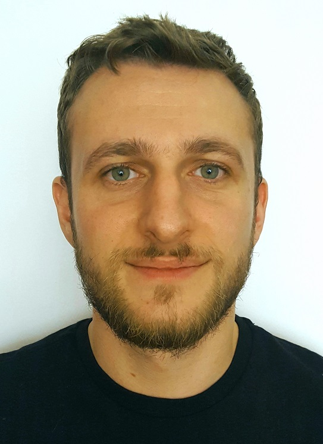

Vlad Andriev
Address: Cluj-Napoca
Email: vlladd112@gmail.com
LinkedIn: http://www.linkedin.com/in/vlad-andriev-03525a159
Skype: live:vlladd112
GitHub: https://github.com/vlladd112/my_work
Mobile: (+4) 0749 079 468
Career objectives
I’ve graduated a Frontend Web Development IT course and I’m very committed and enthusiastic about starting a career in an IT company that will help me build up experience and further develop my knowledge and skills in this field. I am therefore currently looking for a job or an internship as a Frontend Web Developer.
Skills & abilities
- Very adaptable
- Attention to details
- Fast learner
- Problem-solving skills
- Good time management
- Provide very clear and precise instructions
- Match the right person with the right task
- Good coordinator
Professional trainings
The informal school of IT - Web development module
- HTML5, and CSS3: how to build a User Interface;
- JavaScript: how to use variables, functions, objects, scope, AJAX, jQuery, DOM;
- HTTP: fundamentals about the protocol: methods, headers, error codes;
- PHP: how to use variables, functions, classes, includes, interaction with the browser and CRUD operations on a database (MySQL);
- MySQL: how to create and update a database, perform CRUD operations on tables, joins;
- OOP: basics about classes, objects and inheritance in PHP;
- MVC: built a blog with administrative features creating a custom MVC framework from scratch;
- GIT: learned the principles and basic commands;
- Deployment: learned the basics about deploying a LAMP architecture and installing and running a PHP/MySQL application;
Previous work history
PE Teacher
Royal School in Transylvania
Responsibilities
- Conduct Physical Education lessons (provide clear instructions to students and ensure their safety)
- Make Lesson Plans and Half Term Plans
- Organise and coordinate House Games (where all students and teachers participate)
- Member of the Health & Safety Committee
Kinesyologist
Bethesda & Floricica
Responsibilities
- Evaluate patients
- Create a physical recovery program
- Make sure the program goes accordingly
Languages
- Romanian – native
- English – advanced
- Spanish – beginner
- French – beginner
Education
2018 (feb. – jul.)
Frontend Web Development - Course
The Informal School of IT, Cluj-Napoca
2015 – 2016
Pedagogical Module - Level 1
Faculty of Psychology and Science of Education, Alexandru Ioan Cuza University, Iasi
2012 – 2014
Master’s Degree - Physical Methods Applied in Kinesiotherapy and Medical Recovery
Faculty of Physics, Alexandru Ioan Cuza University, Iasi
2009 – 2012
Bachelor’s Degree - Kinesiotherapy and Special Motor Functions
Faculty of Physical Education and Sports, Babeș-Bolyai University, Cluj-Napoca
Other
First place at Challenge Accepted Hackathon with Team Brain Gate – currently still working on the project.
Now that you saw my CV, you might also want to see my Portofolio.